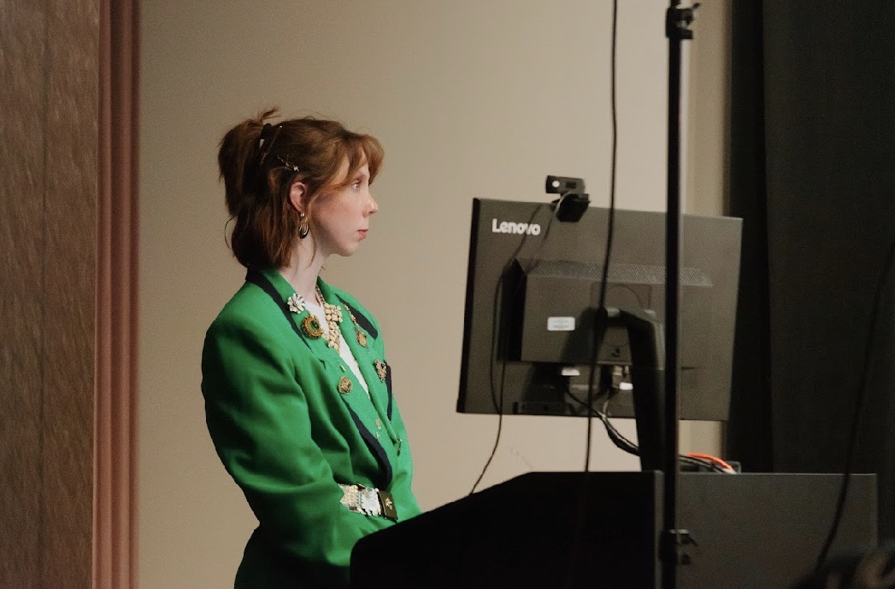
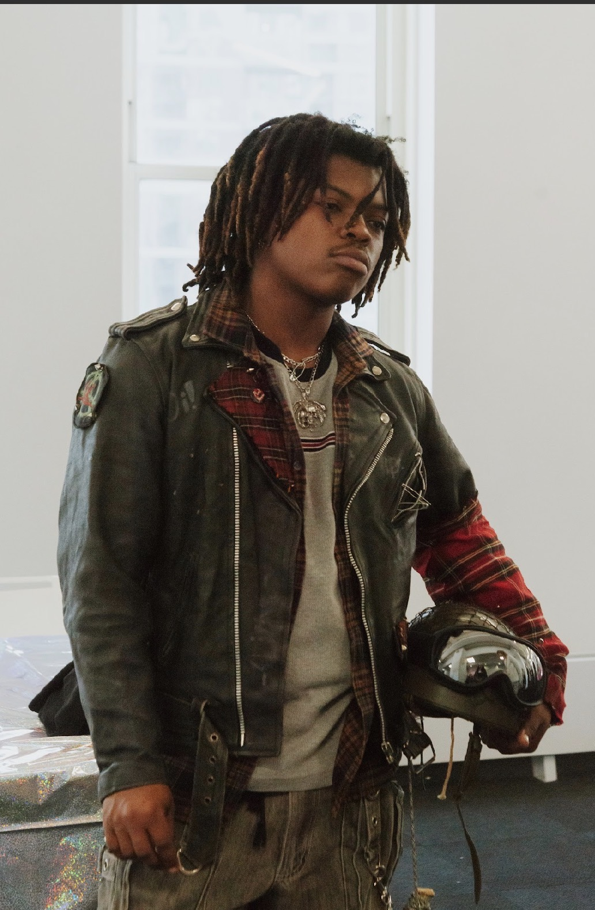
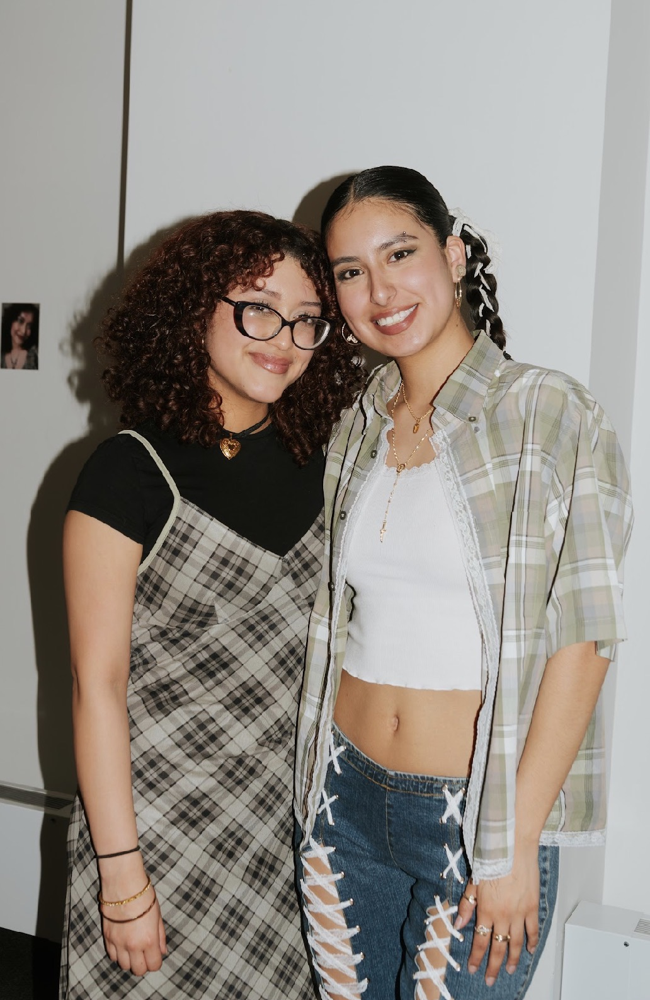
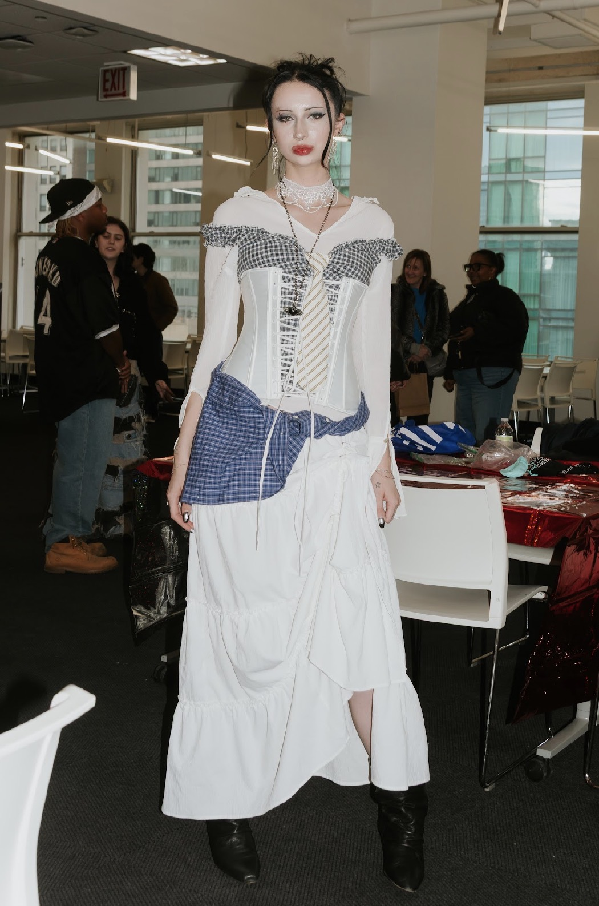
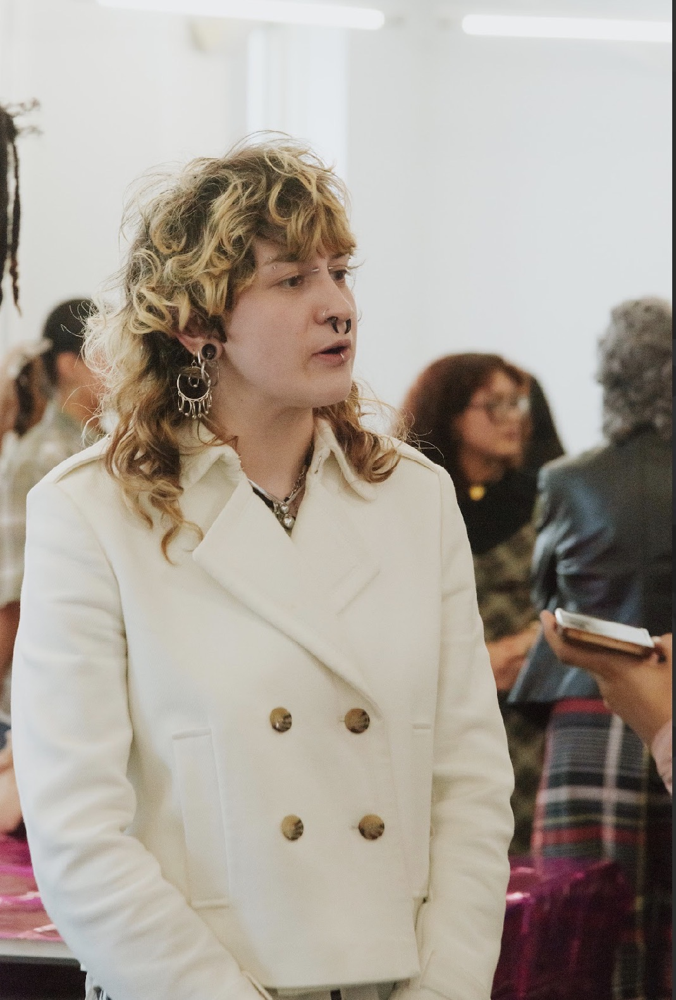
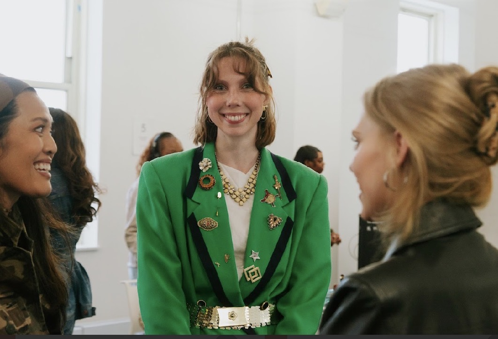
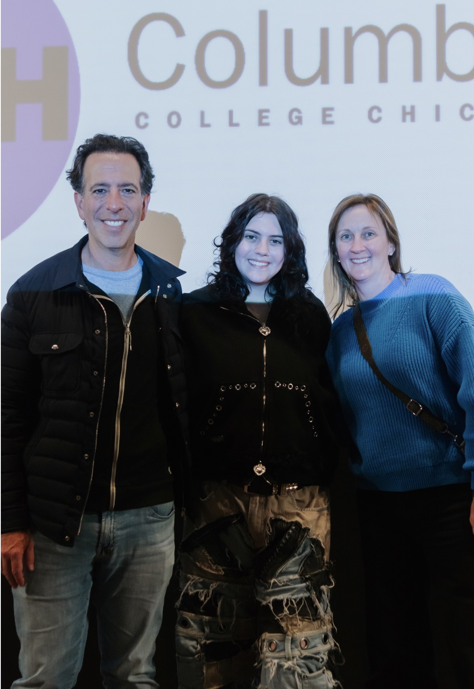

Project Styling: Columbia College's Live Fashion Competition

Inspired by the spirit of Project Runway, Columbia College's Fashion Association launched its 2nd live styling competition, "Project Styling," spotlighting a side of the fashion industry that often receives far less attention than design or merchandising in the school setting. Created by School of Fashion instructor Rachel J Penca and junior fashion student Galaxy Wolf, the event reflected a growing enthusiasm among both students and faculty for fashion styling as a dedicated area of study — and perhaps, eventually, a major of its own.
Held on May 6 at Columbia's South Wabash campus, the competition transformed the eighth floor into a vibrant celebration of creativity and personal expression. Five student stylists presented original looks inspired by the theme "90s Revival," each offering a distinctly different interpretation of the decade's enduring influence on fashion today. From grunge and hip-hop to Chicana style and runway references inspired by Vivienne Westwood, the competition demonstrated the breadth of storytelling possible through styling.

"Fashion schools put a lot of emphasis on design and merchandising. There are so many different areas within the fashion ecosystem, and styling is often overlooked." — Rachel J Penca, School of Fashion instructor
Contestants were evaluated on concept, creativity, innovation, and execution by a panel that included School of Fashion instructor and internationally published stylist Brandon Frein, alongside Columbia alumni Paige Berndt and Josh Ray, both working professionals in the styling and editorial worlds. For the judges, the event represented something larger than a student competition — it offered emerging stylists the kind of hands-on experience the profession demands.

"You can't really teach styling solely in a classroom. You have to experience it in real time." — Brandon Frein, judge
The students embraced that opportunity fully. Winning stylist Riley McGuire, a junior fine arts major and fashion styling minor, drew inspiration from 90s grunge culture, referencing Kurt Cobain, punk aesthetics, and even Marc Jacobs' Spring/Summer 1993 Collection — the now-iconic collection that famously cost Jacobs his job at Perry Ellis. Other contestants explored the influence of 90s hip-hop, gender-fluid silhouettes, and Chicana fashion traditions rooted in what contestant Clarissa Torres described as "rebellious femininity," blending cholo-inspired styling with lace, gold jewelry, and modern updates.


What united the competitors was a shared passion for styling as both craft and communication. Several students spoke about the importance of networking with working industry professionals and finally seeing styling treated as a discipline worthy of serious attention.

After presenting their looks live, the stylists and audience moved to Film Row Cinema, where each contestant walked the crowd through the inspiration and construction behind their work, turning the competition into both a showcase and an educational experience.

"I know how significant it feels to show your craft to the public. Seeing my peers share their creativity like this is really special." — Galaxy Wolf, co-creator

About the author: Marcy Carmack ↗
Did you enjoy this article?
Leave a comment